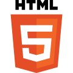
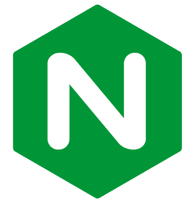
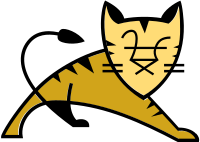
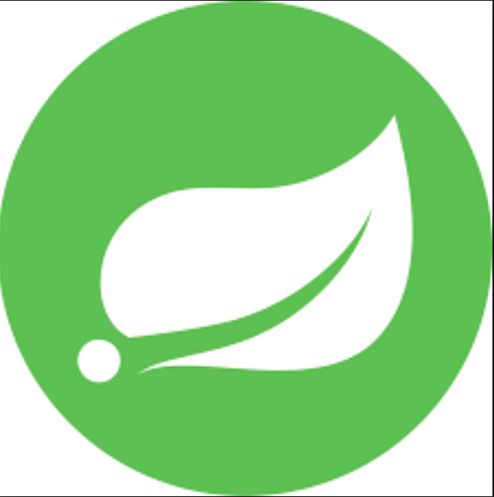
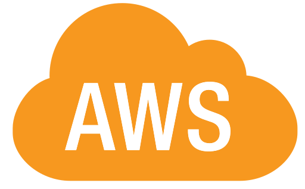
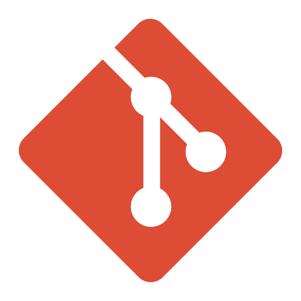
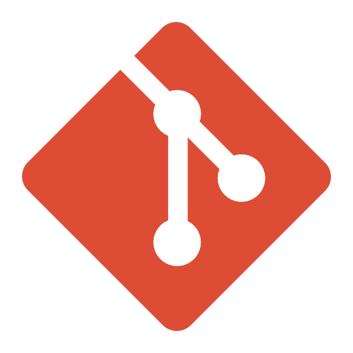

어플리케이션
리셀 상품에 투자할수 있는 트레이딩 플랫폼을 개발하습니다. 총 개발 인원은 2명, 개발기간은 1달이 소요되었습니다. 리셀 투자의 접근성을 낮춰 새로운 투자 기회를 제공하기 위해 개발하였습니다. 서비스 제공자가 현물을 매입하여 청약을 통해 투자자(회원) 들에게 지분을 배분하고 투자자는 지분을 플랫폼 내에서 자유롭게 매매 할 수 있습니다. 상품의 약정기간이 말료되면 현물을 판매하여 수익금을 투자자에게 지급하는 것이 리셀 투자 플랫폼의 메인 시나리오 입니다. 플랫폼내 재화는 open banking을 통해 충전 및 환전이 가능합니다.
프로젝트에서 담당한것
- 앱 기획 및 기본 디자인
- db 스키마 설계
- open-banking api 입출금 프로세스 구현
- 인프라(aws, docker, jenkins) 구축 및 배포
프로젝트 구조
프로젝트는 프론트엔드, 백엔드로 나눠져 있고 프론트엔드는 vanila js를 사용해 MVC패턴을 구현했습니다. 유저의 상태를 로컬 스토리지에 저장하게 됩니다. fetch를 사용해 서버에 요청을 주고 받습니다. 백엔드는 자바, 스프링 프레임 워크를 사용하여 개발하였고, spring mvc프로젝트를 사용해 개발했습니다. 브라우져와 Restful api를 사용하여 통신을 하게 되며 db는 mysql을 사용하였습니다. 형상관리는 깃을 사용하였고, aws ec2를 사용해 배포하였습니다.
skill stack
-
front-end :



-
back-end :



-
deploy & SCM :


 

상세 화면
메인 화면 및 로그인
청약 및 거래 기능
입출금
백엔드 자세히 보기
스프링 프레임 워크를 통해 서버를 개발하였습니다. RESTFUL api를 사용하여 브라우져와 통신을 하며, 사용자의 상태는 로컬 스토리지에 저장되도록 하였습니다. 사용자의 요청은 프록시서버인 nginx를 지나 톰캣으로 전달됩니다. db는 my sql을 사용하였고 jdbc를 사용하여 개발하였으나 mybatis로 전환하는 작업을 하고 있습니다. 도커를 통해 배포환경을 구축하고 젠킨스를 사용하여 배포 자동화를 구현하였습니다.
오픈뱅킹 프로세스
입출금 프로세스는 오픈뱅킹 API를 사용하여 구현했고, 다음의 프로세스를 따르게 됩니다.
깃 플로우
깃 플로우를 구성했고 메인 브랜치에 훅을 걸어 젠킨스에서 배포가 자동으로 이뤄지게
ERD
어플리케이션 설명
실제로 주차장 아르바이트를 하며 개선하면 좋겠다고 생각한 것들을 해결해보고 싶어서 사설 주차장이라는 시나리오를 가지고 웹어플리케이션을 개발했습니다. 예약 시스템, 대형차와 중소형차의 주차공간 분리, 무인 계산기 등 프로새스를 개선하기 위해 주차장에 필요한 기능들을 서비스 로직으로 구현하였고, jsp와 servlet을 사용하여 MVC패턴을 구현하였습니다.
서비스 구조
dto와 dao를 사용하지 않았지만 객체지향 설계를 하기 위해 노력했습니다. DB는 쿼리된 내용을 String으로 출력하기 때문에 util클래스를 통해 map 전환하여 서비스 로직을 담당하는 클래스에서 데이터를 처리할 수 있도록 개발하였습니다. jsp는 화면을 구성하는 view로, cilent의 요청을 로직처리 클래스로 연결하는 controller 그리고 서비스 로직 담당 클래스는 model의 패턴을 구현하였습니다. 서블릿, jsp로의 이동은 forward를 사용하였습니다.